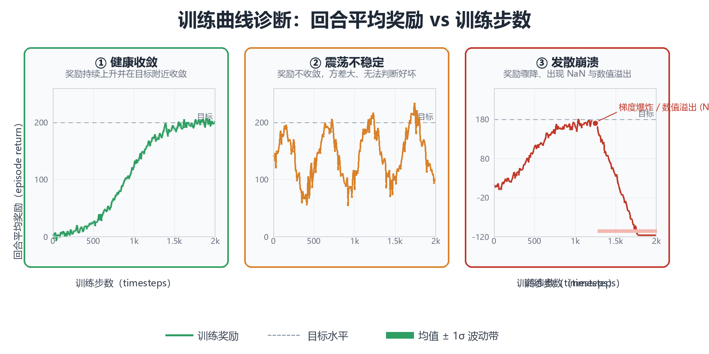
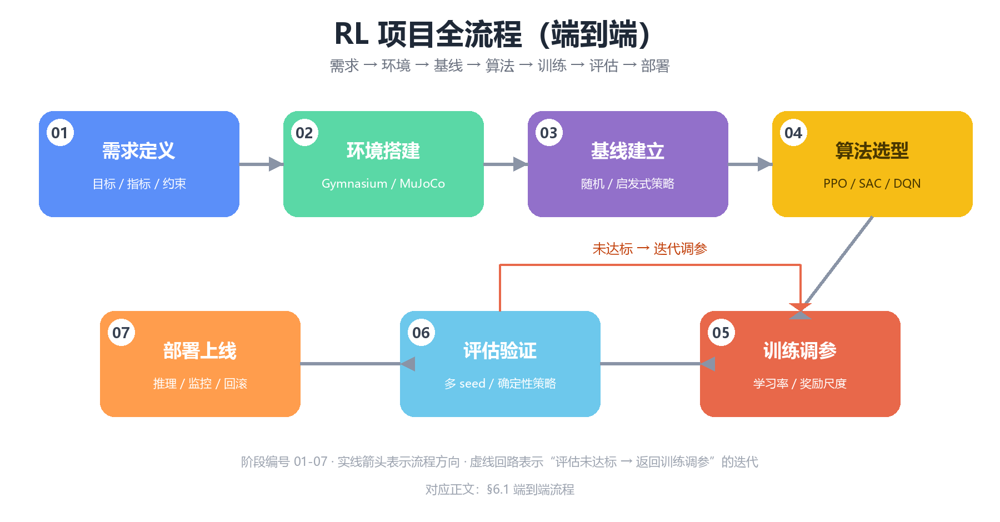

工程实践与调参（Engineering Practice）
前九章构建了强化学习的完整理论图谱：从第 0 章多臂老虎机、第 1 章 MDP 公理体系，到第 2-4 章表格型方法、第 5-7 章深度 RL 三大家族 （DQN / PPO / SAC），再到第 8 章工具链与第 9 章进阶专题。但理论与 论文之间的鸿沟真实存在：同一份 PPO 代码，别人跑出 SOTA，你跑出 NaN——差异往往不在算法本身，而在工程细节：超参数、奖励尺度、 评估协议、随机种子管理。本章是全书最后一章，回答终极问题：如何 把算法稳定、可复现、高效地跑起来。内容分八部分：① 训练不收敛 排查；② 超参数调参指南；③ 奖励设计与 Reward Hacking；④ 稳定训练 技巧；⑤ 评估与可复现性；⑥ 项目完整流程；⑦ 常见陷阱；⑧ 资源与 进阶路径。代码遵循本书惯例：标注"若已安装"的示例依赖第三方库， 其余均为纯 Python 3 + NumPy，可直接运行。建议动手重跑书中的诊断 代码——工程经验只能靠调试积累。
一、训练不收敛排查
监督学习不收敛时，可以靠 loss 曲线与验证集精度定位问题；RL 不收敛时， 面对的是一堆相互纠缠的疑点：奖励没涨？震荡？爆炸？崩溃？RL 训练 失败的多米诺效应在于：策略、价值网络、数据分布三者互为因果，任何 一环出问题都会在其余环节制造"假症状"。因此排查必须系统化：先识别 症状，再沿决策树逐层下钻，最后用日志数据定量验证假设，而不是盲目改 超参数。
1.1 症状清单：四类典型失败模式
几乎所有 RL 训练失败都可以归入四种症状。先对号入座，再决定排查路径：
| 症状 | 典型曲线形态 | 常见原因（按概率排序） | 首选排查手段 |
|---|---|---|---|
| ① 奖励不涨（停滞） | 曲线长期水平，与随机策略基线相当 | 探索不足；奖励稀疏；学习率过小；网络容量不足；熵系数过大导致策略停滞 | 对比随机基线；检查探索噪声/ε；奖励分布直方图；放大学习率试跑 |
| ② 奖励震荡 | 曲线大幅波动，均值不升；或"涨上去又跌回来" | 学习率过大；batch size 过小；γ 过大导致方差放大；PPO clip 失效（策略更新过猛）；奖励尺度异常 | 降低学习率；增大 batch；检查 KL 散度与 clip 触发率；奖励归一化 |
| ③ 奖励爆炸 | 数值急剧放大到 ±1e6 量级，随后曲线消失 | 奖励/价值尺度失控；梯度爆炸；TD 误差爆炸；双网络不同步 | 检查 log 中 reward/loss 数值；梯度裁剪；奖励 clip 或归一化；价值网络输出直方图 |
| ④ 训练崩溃（NaN/Inf） | 前几步正常，随后 loss 变 NaN，曲线断裂 | 学习率过大；数值不稳定（除零、log(0)、sqrt 负值）；熵为负；obs 含 NaN；初始化不当 | 定位首个 NaN 出现步数；逐层打印梯度范数；obs/reward 合法性校验；降学习率 |
核心思想：症状是结果，不是原因。四种症状背后共享一批根因 （学习率、奖励尺度、探索、数值稳定性），只是在不同算法、不同环境上 表现为不同形态。排查的第一原则是"先止血、再根治"：先把 NaN 与 爆炸这类致命问题解决（否则一切曲线都是无效数据），再处理震荡与停滞 这类性能问题。
1.2 诊断决策树
把症状映射到根因需要一套可执行的决策流程。下面的决策树覆盖了 80% 的 训练失败场景，自上而下逐层排除：
训练曲线异常
│
┌───────────────┼───────────────────┐
▼ ▼ ▼
出现 NaN/Inf 奖励爆炸(±1e6) 不涨/震荡/停滞
│ │ │
① 检查 obs/reward ① 检查奖励尺度 ① 对比随机策略基线
是否含 NaN/Inf ② 梯度范数是否爆炸 ── 若奖励≈基线 →
② 检查 log(π) 是否 ③ 检查 TD 误差量级 探索不足：加大 ε /
出现 -inf(策略 ④ 检查 value 输出 熵系数 / 噪声
坍缩到确定性) 是否指数级增长 ② 奖励分布直方图：
③ 降学习率 ×0.1 ──► │ 若量级 >100 → 缩放
④ 打开梯度裁剪 ┌──┴─────────┐ 若稀疏(90%为0) →
与数值保护 │ 有爆炸 │ 无爆炸 奖励塑形/课程
│ ↓ │ ↓ ③ 学习率二分搜索：
│ 梯度裁剪 │ 奖励 log 空间试
│ + 降学习率 │ 归一化 {1e-4,3e-4,1e-3}
└─────────────┘ ④ 检查策略更新幅度：
PPO: KL / clip 触发率
SAC: 熵值是否塌缩到 0
│
┌────┴─────┐
▼ ▼
更新过猛 更新正常
↓ ↓
降 lr/降 clip 看 value loss：
│
┌─────┴──────┐
▼ ▼
value 发散 value 正常
(lr 过大) (调 γ / 网络
容量 / 训练步数)
决策树的使用原则：每层只验证一个假设。例如"奖励不涨"时，不要 同时改学习率、γ、网络结构——那样你永远不知道是哪个改动生效。一次只 动一个变量，用 2~3 个随机种子验证。
1.3 用训练日志做定量诊断
人眼"看曲线"只能定性，工程上需要把诊断写成可复现的代码。训练日志
（通常由 TensorBoard / wandb 导出，或自研 CSV）包含 timestep、
episode_reward、loss、entropy、kl 等字段。下面这段纯 NumPy
代码读取日志，自动输出一份诊断报告：
先看三类典型失败曲线的形态对比（下图用合成数据绘制：健康收敛曲线 带 ±1σ 波动带，震荡曲线围绕中线大幅摆动，发散曲线在训练后期骤降并 出现 NaN）。识别曲线形态是诊断的第一步——形态决定了你走决策树 的哪一条分支：

图中"目标"虚线表示任务解算标准（如 CartPole 的 500 分、LunarLander 的 200 分）。健康收敛的判定标准不是"曲线变平"，而是"最近 N 步 评估回报的均值超过目标线，且波动带不触碰目标线以下"；震荡与发散 则直接进入 1.2 节决策树的对应分支。
# 训练日志诊断器（纯 Python + NumPy，可直接运行）
# 输入：CSV 日志，列为 [timestep, reward, loss, entropy]
# 输出：症状判定 + 建议动作
import numpy as np
def load_log(path):
"""读取训练日志；此处用合成数据演示，实际替换为 np.loadtxt/pandas 读取"""
rng = np.random.default_rng(0)
n = 2000
ts = np.arange(n) * 100
# 合成一条"先涨后崩"的日志：前 1200 步正常上升，之后注入 NaN
reward = 30 + 60 * (1 - np.exp(-ts / 40000.0)) + rng.normal(0, 5, n)
reward[1300:] = np.nan
loss = 1.0 / (1 + ts / 5000.0) + rng.normal(0, 0.05, n)
loss[1300:] = np.nan
entropy = np.clip(1.2 - ts / 30000.0, 0.05, None)
entropy[1300:] = np.nan
return {"timestep": ts, "reward": reward, "loss": loss, "entropy": entropy}
def diagnose(log, window=100):
"""对日志做四类检查，返回 (症状列表, 建议列表)"""
ts, r, loss, ent = (log[k] for k in ("timestep", "reward", "loss", "entropy"))
symptoms, advice = [], []
# ① NaN / Inf 检测：定位首个异常点
bad = ~np.isfinite(r)
if bad.any():
first_bad = int(np.argmax(bad))
symptoms.append(f"发现 NaN/Inf：首个异常步数 ≈ {ts[first_bad]}")
advice.append("检查 obs 是否含 NaN；降低学习率 ×0.1；开启梯度裁剪与数值保护")
# ② 发散检测：末尾窗口相对峰值是否崩盘
valid = np.isfinite(r)
if valid.sum() > 2 * window:
rv = r[valid]
peak = np.nanmax(rv)
tail_mean = np.nanmean(rv[-window:])
if tail_mean < 0.3 * peak:
symptoms.append(f"曲线发散：峰值 {peak:.1f} → 末尾均值 {tail_mean:.1f}")
advice.append("奖励/价值尺度可能失控；检查 TD 误差与梯度范数；考虑奖励归一化")
# ③ 震荡检测：最近窗口内相对波动幅度
if valid.sum() > 2 * window:
rv = r[valid]
w = rv[-window:]
rel_std = np.std(w) / (np.abs(np.nanmean(w)) + 1e-8)
if rel_std > 0.5:
symptoms.append(f"曲线震荡：最近 {window} 步相对标准差 {rel_std:.2f}")
advice.append("降低学习率；增大 batch size；检查 PPO clip 触发率是否过高")
# ④ 停滞检测：最近两个窗口均值是否在增长
if valid.sum() > 3 * window:
rv = r[valid]
m1, m2 = np.nanmean(rv[-2 * window:-window]), np.nanmean(rv[-window:])
if m2 - m1 < 1e-3 * (abs(m1) + 1e-8):
symptoms.append(f"曲线停滞：窗口均值 {m1:.2f} → {m2:.2f}，无增长")
advice.append("检查探索（ε/熵/噪声）是否过早消失；对比随机策略基线")
# ⑤ 熵塌缩检测（策略梯度类算法）
if np.isfinite(ent).all() and np.nanmin(ent) < 0.05:
symptoms.append("策略熵塌缩（熵 < 0.05）：策略退化为确定性")
advice.append("增大熵系数；检查是否有 log(0) 风险；考虑熵下限保护")
return symptoms, advice
if __name__ == "__main__":
log = load_log("fake.csv") # 实际使用: load_log("train_log.csv")
symptoms, advice = diagnose(log)
if not symptoms:
print("未检测到明显异常，曲线状态健康。")
for s, a in zip(symptoms, advice):
print(f"[症状] {s}")
print(f"[建议] {a}")
# 预期输出:
# [症状] 发现 NaN/Inf：首个异常步数 ≈ 130000
# [建议] 检查 obs 是否含 NaN；降低学习率 ×0.1；开启梯度裁剪与数值保护
# [症状] 曲线发散：峰值 90.0 → 末尾均值 nan
# [建议] 奖励/价值尺度可能失控；检查 TD 误差与梯度范数；考虑奖励归一化
核心思想：诊断代码的价值在于把"感觉不对"变成"证据确凿"。 每次训练都自动跑一遍上述检查，把症状写进实验报告，就能建立"根因 ↔ 症状"的映射库——下次遇到同样的问题，五分钟内定位，而不是重新试错 一整天。
1.4 数值稳定：崩溃的最后一根稻草
NaN 的传播路径几乎总是：某个中间量溢出 → 梯度爆炸 → 权重变 NaN → 后续一切皆 NaN。常见触发点与防护手段：
| 触发点 | 数学形式 | 防护手段 |
|---|---|---|
| 概率取对数 | $\log \pi(a|s)$，当 $\pi \to 0$ 时 $\to -\infty$ | 概率加 $\epsilon$（如 1e-8）；用 log_softmax 而非先 softmax 再 log |
| 分布方差除零 | $\sigma \to 0$ 时正态分布采样除零 | 方差下限 1e-4；std = softplus(x) + 1e-4 |
| TD 误差爆炸 | $\delta = r + \gamma Q' - Q$ 累积放大 | 梯度裁剪；reward 缩放；价值网络输出加 tanh 约束 |
| 折扣回报求和 | 长 horizon 且 $\gamma \approx 1$ 时 $G_t$ 巨大 | 奖励归一化；$\gamma$ 适当调小；GAE λ 平滑 |
| 观测含 NaN | 环境 bug 或除零 | reset/step 后校验 np.isfinite(obs).all() |
| 损失为负 | 熵项无界（如高斯熵可负） | 熵系数为正且受限；监控熵值 |
工程惯例：训练循环中每 N 步对 obs、reward、log_probs 做一次
np.isfinite 校验，一旦发现非法值立即 dump 当前 checkpoint 与最近
轨迹——NaN 之后的数据没有分析价值，但 NaN 之前的轨迹是宝贵的事故现场。
1.5 案例复盘：三个真实排障记录
理论讲得再多，不如看三个"从症状到根因"的完整排障案例。每个案例都 遵循同一流程：观察症状 → 提出假设 → 用日志/代码验证 → 定位根因 → 修复 → 复跑验证：
| 案例 | 症状 | 提出的假设（按序验证） | 验证手段 | 根因 | 修复 |
|---|---|---|---|---|---|
| A：LunarLander 奖励停滞在 80 分 | 曲线平坦，与随机基线（约 -100 分）有差距但远低于 200 分解算线 | ① 学习率太小 ② 探索不足 ③ 奖励尺度问题 | ① 学习率放大 10 倍无改善 ② 打印熵值：训练中段熵已接近 0 ③ 奖励直方图正常 | 熵系数为 0 且 ε 机制缺失，策略过早确定性化，探索枯竭 | 熵系数调到 0.01 并监控熵值；重跑后 200 分解算 |
| B：HalfCheetah 前 2e5 步正常后崩溃 | 曲线上升后突然出现 NaN，loss 变 inf | ① 学习率过大 ② obs 含 NaN ③ 梯度爆炸 | ① 降学习率无效 ② np.isfinite(obs) 校验通过 ③ 打印梯度范数：崩溃前梯度范数从 1e1 跳到 1e6 |
高斯策略的 $\sigma$ 经 softplus 后趋近 0，log(σ) 产生 -inf |
标准差下限 std = softplus(x) + 1e-4；梯度裁剪 0.5 |
| C：PPO 在 MuJoCo 上"涨上去又跌回来" | 曲线到达峰值后回落 30%，反复 | ① clip 触发率过高 ② γ 过大 ③ 学习率过大 | ① 打印 clip 触发率：>40%（正常应 <10%） ② 降 γ 无效 ③ 学习率 3e-4 → 1e-4 | 学习率与 clip 隐式耦合（见 7.1 节），单步更新过猛导致策略震荡 | 学习率降到 1e-4 且 clip 从 0.2 降到 0.15；曲线平稳 |
复盘规律：三个案例的根因分属三类——探索管理（A）、数值稳定性 （B）、更新幅度（C），恰好对应本书反复强调的三个稳定化支柱。排障的 共性不是"运气好"，而是每次只验证一个假设：案例 A 若同时改学习率 和熵系数，就无法确定是哪个修复起效，经验也无法沉淀。
核心思想：排障记录是 RL 工程师最重要的个人资产。每解决一个 问题，就把"症状 → 根因 → 修复"三元组写进自己的知识库（或团队 wiki）。三个月后，80% 的新问题都能从知识库直接命中——这就是 "经验"的工程化形态。
二、超参数调参指南
深度 RL 的超参数敏感度远高于监督学习：RL 的训练数据（策略采样的 轨迹）随策略变化，超参数不仅影响优化过程，还影响数据分布本身。 学习率太大 → 策略突变 → 数据分布突变 → 训练崩溃；探索系数太大 → 数据质量差 → 价值学习慢。因此调参不是"网格搜索最优解"，而是"在 稳定性与样本效率之间走钢丝"。
2.1 关键超参数速查表
下表汇总了各算法的核心超参数、经验区间与调参方向。经验区间来自 Stable-Baselines3 默认值、Spinning Up 建议与社区基准测试的共识， 调参方向给出"问题 → 往哪个方向动"的规则：
| 超参数 | 符号 | 经验区间 | 调大（↑）的效果 | 调小（↓）的效果 | 典型问题对策 |
|---|---|---|---|---|---|
| 学习率 | $\alpha$ | $3\times10^{-4} \sim 3\times10^{-3}$（PPO/SAC）；$1\times10^{-4} \sim 1\times10^{-3}$（DQN 类） | 收敛快但易震荡/崩溃 | 稳定但收敛慢、易停滞 | 崩溃→↓；停滞→↑；用 log 空间二分 |
| batch size | $B$ | PPO: 64~4096；DQN: 32~256；SAC: 256~1024 | 梯度稳定、方差小，但样本利用率低 | 更新频繁、探索性好但噪声大 | 震荡→↑；样本效率低→↓ |
| 折扣因子 | $\gamma$ | 0.9 ~ 0.999（游戏 0.99，长 horizon 0.999） | 更"有远见"，但方差与偏差放大 | 更短视，稳定但可能次优 | 学习慢且任务需长远规划→↑；震荡→↓ |
| 回放缓冲区 | $ | D | $ | DQN: 1e5~1e6；SAC: 1e5~1e6 | 数据多样、稳定，但过时数据多 |
| 网络宽度 | $d$ | 64~512（MLP）；CNN 随任务 | 容量大、能拟合复杂策略 | 容量小、欠拟合但稳定 | 欠拟合→↑；过拟合/不稳定→↓ |
| 网络层数 | $L$ | 2~3 层 MLP | 表达力强，但更难优化 | 简单稳定 | 默认 2 层；复杂任务再加 |
| PPO clip 范围 | $\epsilon$ | 0.1 ~ 0.3（默认 0.2） | 允许大步更新、样本效率高但易崩 | 更新保守、稳定但慢 | 不稳定→↓（0.1）；太慢→↑ |
| GAE λ | $\lambda$ | 0.9 ~ 0.99（默认 0.95） | 偏 MC，方差大偏差小 | 偏 TD，方差小偏差大 | 高方差→↓；高偏差→↑ |
| 熵系数 | $\beta$ | PPO: 0~0.01；SAC 自动调 | 探索强但策略"懒"、奖励低 | 探索弱、易过早收敛 | 停滞→↑；奖励下降→↓ |
| 目标网络更新 | $\tau$ | 软更新 0.005~0.01；硬更新 1e3~1e4 步 | 追踪快但不稳 | 稳定但滞后 | 不稳定→↓（更软） |
| 探索噪声 | $\sigma$ | SAC: 0.1~0.3；DDPG: 0.1~0.3 | 探索充分但奖励受损 | 利用充分但探索不足 | 停滞→↑；奖励下降→↓ |
| 训练步数 | $T$ | 视任务：玩具 1e5，基准 1e6~1e7 | 更多数据，但可能过拟合环境 | 不足则欠拟合 | 曲线仍在上升→加预算 |
核心思想：超参数之间存在隐式耦合（见 7.1 节）：例如 $\gamma$ 与 GAE λ 共同决定"多远的未来"被计入；学习率与 clip 范围 共同决定策略更新步幅。调参时优先调"全局杠杆"（学习率、γ）， 再调"局部旋钮"（clip、熵系数），避免同时动多个耦合变量。
2.2 三套推荐的默认配置
新手最常见的错误是"每换一个环境就从头调参"。正确做法是：以经过 大量基准验证的默认配置为起点，只动必要的一两个旋钮。下面是三类 代表算法的推荐起点（以 PyTorch 语义描述，与 SB3 默认值基本一致）：
| 超参数 | PPO（离散/连续通用） | DQN（Atari 类像素输入） | SAC（连续控制） |
|---|---|---|---|
| 学习率 | $3\times10^{-4}$ | $1\times10^{-4}$（RMSProp 时 $2.5\times10^{-4}$） | $3\times10^{-4}$ |
| 优化器 | Adam | Adam / RMSProp | Adam |
| 网络 | MLP(64,64) 或 (256,256) | CNN（Nature DQN 结构） | MLP(256,256) |
| batch size | 64（n_steps=2048 时） |
32 | 256 |
| $\gamma$ | 0.99 | 0.99 | 0.99 |
| 回放缓冲区 | —（on-policy，无） | 1e6（帧） | 1e6 |
| 目标网络 | —（无） | 硬更新每 1e4 步 | 软更新 $\tau=0.005$ |
| 策略更新频率 | n_epochs=10，clip=0.2 |
每 4 步更新一次 | 每步更新 |
| GAE λ | 0.95 | — | — |
| 熵系数 | 0.0（连续）/ 0.01（离散） | —（用 ε-greedy） | 自动（目标熵 $-\dim\mathcal{A}$） |
| 探索机制 | 策略随机性 | ε-greedy，ε 从 1.0 线性衰减到 0.01 | 高斯噪声 $\sigma=0.2$ |
| 梯度裁剪 | max norm 0.5 | 无（必要时 10） | 无（必要时 1.0） |
| 归一化 | obs 归一化；reward 可选 | obs/255；reward clip ±1 | obs 归一化；reward 可选 |
何时偏离默认：当任务与基准环境差异明显时——例如稀疏奖励任务 （探索不足 → 熵系数上调/加内在奖励）、超长 horizon 任务（$\gamma$ 上调到 0.999）、奖励量级巨大（必须做奖励归一化）。偏离默认值时， 在实验记录中注明原因，这是工程素养的一部分。
2.3 学习率调度（Learning Rate Scheduling）
深度 RL 中，学习率调度不如监督学习普遍，但确实有效：warmup 防止
初期梯度爆炸，衰减（decay）让后期收敛更精细。on-policy 算法（PPO）
通常用线性衰减（linear_schedule，SB3 内置），off-policy 算法（DQN/
SAC）常用固定学习率 + warmup。实现如下：
# 学习率调度器（纯 NumPy 实现，可直接运行）
import numpy as np
def linear_schedule(initial_lr, total_steps):
"""线性衰减：lr(progress) = initial_lr * (1 - progress)"""
def schedule(progress_remaining):
# progress_remaining: 1.0 → 0.0（训练进度 0% → 100%）
return initial_lr * progress_remaining
return schedule
def warmup_cosine(initial_lr, warmup_steps, total_steps, min_lr=0.0):
"""warmup + 余弦退火：先线性升温，再余弦衰减到 min_lr"""
def schedule(step):
if step < warmup_steps:
return initial_lr * (step + 1) / warmup_steps # 线性升温
t = (step - warmup_steps) / max(1, total_steps - warmup_steps)
t = np.clip(t, 0.0, 1.0)
return min_lr + 0.5 * (initial_lr - min_lr) * (1 + np.cos(np.pi * t))
return schedule
# 演示：PPO 线性衰减 vs SAC 固定学习率的区别
total = 100_000
lin = linear_schedule(3e-4, total)
cos = warmup_cosine(3e-4, 1_000, total)
for step in [0, 500, 1_000, 10_000, 50_000, 100_000]:
print(f"step={step:>7d} 线性衰减={lin(1 - step/total):.2e} "
f"warmup+余弦={cos(step):.2e}")
# 预期输出:
# step= 0 线性衰减=3.00e-04 warmup+余弦=3.00e-04
# step= 500 线性衰减=2.98e-04 warmup+余弦=1.50e-04
# step= 1000 线性衰减=2.97e-04 warmup+余弦=3.00e-04
# step= 10000 线性衰减=2.70e-04 warmup+余弦=2.96e-04
# step= 50000 线性衰减=1.50e-04 warmup+余弦=1.50e-04
# step= 100000 线性衰减=0.00e+00 warmup+余弦=0.00e+00
核心思想：学习率调度的本质是在探索期给足"行动力"、在收敛期 给足"精细度"。对 PPO 这类 on-policy 算法，线性衰减几乎总是安全 的；对大规模分布式训练（如 RLHF 的 PPO 变体），warmup + 余弦退火 是标配。
2.4 超参数搜索：方法对比与预算分配
盲目网格搜索在 RL 中代价高昂（每次运行 1e6 步可能耗时数小时）。常用 方法对比：
| 方法 | 原理 | 采样次数（达到同等效果） | 适用阶段 | 优缺点 |
|---|---|---|---|---|
| 网格搜索（Grid） | 每个维度等距取点，笛卡尔积 | $O(k^d)$，$d$ 为超参个数 | 维度 ≤ 2 | 简单但随维度爆炸 |
| 随机搜索（Random） | 各维度独立随机采样 | 网格的 $1/10$ 可达相似效果（Bergstra 2012） | 任意维度 | 简单高效，不浪费预算在无效组合 |
| 贝叶斯优化（BO） | 高斯过程代理模型 + 采集函数 | 随机搜索的 $1/2 \sim 1/3$ | 预算紧张、评估昂贵 | 效果好但实现复杂；需处理噪声 |
| 多臂老虎机式（HyperBand/BOHB） | 早停差配置，资源动态分配 | 大幅节省 | 大规模搜索 | 适合并行集群；实现复杂 |
工程建议：① 先用随机搜索 + 中等预算（如 20~50 次运行）锁定 "好区域"；② 再用 BO 或手动微调；③ 搜索空间用 log 均匀分布 （学习率、γ、λ 这类乘法量纲参数），普通均匀分布会浪费预算；④ 每次 搜索只调 3~5 个最关键参数（学习率、batch、γ、clip、熵系数），其余 锁定默认值；⑤ 评估用 3 个 seed 的均值，单 seed 的排名噪声太大， 会把随机性误当成超参优劣。
# 随机搜索驱动骨架（纯 Python 实现，可直接运行）
import random
def sample_config(rng):
"""log 均匀采样关键超参数"""
return {
"lr": 10 ** rng.uniform(-4, -2.5), # 1e-4 ~ 3e-3，log 均匀
"gamma": rng.uniform(0.9, 0.999),
"clip": rng.uniform(0.1, 0.3),
"ent_coef": 10 ** rng.uniform(-4, -1), # 1e-4 ~ 0.1
"batch_size": rng.choice([64, 128, 256, 512]),
}
rng = random.Random(0)
for trial in range(5):
cfg = sample_config(rng)
print(f"trial {trial}: lr={cfg['lr']:.2e} gamma={cfg['gamma']:.3f} "
f"clip={cfg['clip']:.2f} ent={cfg['ent_coef']:.2e} bs={cfg['batch_size']}")
# 预期输出（示例，每次 seed 固定可复现）:
# trial 0: lr=5.47e-04 gamma=0.938 clip=0.14 ent=8.12e-03 bs=512
# trial 1: lr=1.90e-04 gamma=0.930 clip=0.28 ent=1.02e-02 bs=128
# trial 2: lr=4.68e-04 gamma=0.984 clip=0.24 ent=5.25e-04 bs=256
# trial 3: lr=2.94e-04 gamma=0.988 clip=0.11 ent=3.41e-03 bs=64
# trial 4: lr=9.87e-04 gamma=0.949 clip=0.27 ent=1.57e-02 bs=256
2.5 折扣因子 γ 的深入讨论
γ 常被当作"顺手设成 0.99"的超参数，但它决定了学习的有效视界 （effective horizon）：在折扣回报 $G_t = \sum_{k\ge 0}\gamma^k r_{t+k}$ 中，$k$ 步之后的奖励权重为 $\gamma^k$，其"半衰期"对应的步数为
$$k_{1/2} = \frac{\ln 0.5}{\ln \gamma} \approx \frac{0.693}{1-\gamma}$$
有效视界的工程含义：γ 越大，价值函数需要"看"得越远，学习的方差 越大、收敛越慢；γ 越小，智能体越短视，可能放弃长远最优。
| γ | 半衰期步数 $k_{1/2}$ | 适合的任务类型 | 反例 |
|---|---|---|---|
| 0.9 | ≈ 7 步 | 短视任务：单步决策、即时反馈游戏 | 迷宫导航（需要远期回报） |
| 0.95 | ≈ 14 步 | 中程任务：CartPole、LunarLander | 长程任务会"近视" |
| 0.99 | ≈ 69 步 | 默认值：绝大多数基准环境 | 超过数百步的稀疏奖励任务 |
| 0.995 | ≈ 139 步 | 长 horizon 任务：围棋、Dota | 方差大，需要大量样本 |
| 0.999 | ≈ 693 步 | 超长任务：部分机器人/物流 | 几乎等价于 undiscounted，方差极高 |
调 γ 的工程规则：① 与 GAE λ 一起调（见 7.1 节耦合表），先固定 λ=0.95 只动 γ；② 稀疏奖励任务若 γ=0.99 学不动，不要直接跳到 0.999——先加奖励塑形或课程学习（3.1 节），γ 的作用是"远见"而不是 "探索"；③ 用 TD(λ)/GAE 时，γ 与 λ 共同决定方差-偏差权衡，报告实验 时必须同时给出两者。
2.6 训练预算与早停（Budget & Early Stopping）
训练预算（total timesteps）不是"越多越好"的旋钮，而是实验设计的 一部分。预算不足会欠拟合，预算过剩会浪费算力——而 RL 的"过训练" 同样有害：策略可能遗忘早期学到的技能（分布漂移导致的价值遗忘）， 评估曲线出现"涨上去又跌下来"。
| 判定方法 | 公式/做法 | 用途 |
|---|---|---|
| 斜率判定 | 最近 $W$ 步评估回报的线性回归斜率 $< \epsilon$（如 1e-3） | 判断收敛（替代肉眼） |
| 目标达成判定 | 最近 $W$ 步评估均值 $\ge$ 解算阈值（env.spec.reward_threshold） |
提前终止（early stop） |
| 最佳 checkpoint | 记录评估指标最高的 checkpoint，训练结束时回滚 | 防遗忘（catastrophic forgetting） |
| 预算预估 | 从学习曲线的"每 1e5 步提升量"外推剩余所需步数 | 规划算力 |
# 早停与最佳 checkpoint 选择（纯 NumPy，可直接运行）
import numpy as np
def should_stop(eval_returns, window=20, target=None, slope_eps=1e-3):
"""输入：按评估顺序排列的回报数组（可含历史）"""
r = np.asarray(eval_returns, dtype=float)
if len(r) < window:
return False, None
w = r[-window:]
x = np.arange(window, dtype=float)
slope = np.polyfit(x, w, 1)[0] # 线性回归斜率
if target is not None and w.mean() >= target:
return True, "达到目标阈值"
if abs(slope) < slope_eps:
return True, "曲线已收敛（斜率≈0）"
return False, None
# 演示：回报在 150 附近徘徊，目标 200
returns = list(np.linspace(50, 150, 30)) + [150 + np.sin(i) for i in range(10)]
stop, reason = should_stop(returns, target=200)
print(f"是否早停: {stop}，原因: {reason}") # 预期输出: 是否早停: False，原因: None
stop, reason = should_stop([200.1, 200.3, 200.2, 200.4], window=4, target=200)
print(f"是否早停: {stop}，原因: {reason}") # 预期输出: 是否早停: True，原因: 达到目标阈值
核心思想：训练预算与早停的本质是把"训练多久"从拍脑袋变成 可判定条件。成熟的实验框架（SB3 的
EvalCallback、wandb 的 early-terminate）都内置了这些判定；自己实现时，记住两条：停止 条件必须基于评估指标而非训练 loss，停止前先保存最佳 checkpoint。
三、奖励设计与 Reward Hacking
第 1 章确立了奖励假设：任何目标都可以表述为最大化累积奖励。但 "表述为奖励"与"奖励真的表达了目标"是两回事。奖励设计（Reward Design）是 RL 工程中最重要也最易被低估的一环——奖励给得不对，智能体 不会"学不会"，而会精确地、有创造力地利用奖励函数的漏洞，即 Reward Hacking（奖励破解）。
3.1 奖励塑形原则
直接给目标奖励（稀疏奖励）学习太慢；给过程奖励（稠密奖励）又容易 引入偏差。奖励塑形（Reward Shaping）的经典结论是 Potential-Based Shaping（PBRS，Ng et al., 1999）：若塑形奖励取如下形式
$$F(s, a, s') = \gamma \Phi(s') - \Phi(s)$$
其中 $\Phi$ 是任意状态势函数（potential function），则最优策略不变 （策略不变性，policy invariance）。直觉：$\Phi$ 衡量"这个状态离目标 有多近"，塑形项 $\gamma\Phi(s')-\Phi(s)$ 只是把"势能的提升"提前兑现， 不改变任何策略的长期总回报排序。
| 塑形方式 | 形式 | 是否保最优 | 说明 |
|---|---|---|---|
| PBRS 势函数塑形 | $\gamma\Phi(s')-\Phi(s)$ | ✅ 是（Ng 定理） | 安全的首选；$\Phi$ 可取"到目标距离的负值" |
| 奖励缩放 | $c \cdot r$（$c>0$） | ✅ 是 | 只改变量级；配合归一化使用 |
| 奖励平移 | $r + b$ | ✅ 是（有限 horizon 内） | 改变探索偏好，不改变最优策略 |
| 稠密过程奖励 | 每步给"进展"奖励 | ❌ 不一定 | 可能鼓励绕圈刷分（见 3.2） |
| 惩罚项 | 对特定行为扣分 | ❌ 不一定 | 可能引入"为避免惩罚而不行动"的次优行为 |
核心思想：奖励塑形的黄金法则是——能用 PBRS 形式（势函数差） 表达的塑形，尽量用 PBRS 表达；不能用 PBRS 表达的过程奖励，必须 意识到它可能改变最优策略，需要额外的对抗验证（3.3 节）。
下面的代码在一个玩具 GridWorld 上演示 PBRS：带塑形与不带塑形的 Q-Learning 收敛到相同的最优策略，但塑形后收敛更快：
# PBRS 奖励塑形演示（纯 NumPy，可直接运行）
# 4x4 网格：S=起点(0,0)，G=终点(3,3)；每步奖励 -1，到达 G 得 +10 并终止
import numpy as np
N = 4
GOAL = (3, 3)
ACTIONS = [(0, 1), (0, -1), (1, 0), (-1, 0)] # 右 左 下 上
def phi(s):
"""势函数：到终点的负曼哈顿距离（越近势越高）"""
return - (abs(s[0] - GOAL[0]) + abs(s[1] - GOAL[1]))
def step(s, a, use_shaping, gamma=0.99):
ns = (min(N - 1, max(0, s[0] + a[0])), min(N - 1, max(0, s[1] + a[1])))
r = 10.0 if ns == GOAL else -1.0
if use_shaping:
r += gamma * phi(ns) - phi(s) # PBRS 塑形项
return ns, r
def q_learning(use_shaping, episodes=400, lr=0.1, gamma=0.99, eps=0.1):
rng = np.random.default_rng(0)
Q = np.zeros((N, N, 4))
returns = []
for _ in range(episodes):
s = (0, 0); total = 0.0
for _ in range(200):
if rng.random() < eps:
a = ACTIONS[rng.integers(4)]
else:
a = ACTIONS[np.argmax(Q[s[0], s[1]])]
ns, r = step(s, a, use_shaping)
Q[s[0], s[1], ACTIONS.index(a)] += lr * (
r + gamma * np.max(Q[ns[0], ns[1]]) - Q[s[0], s[1], ACTIONS.index(a)])
s = ns; total += r
if s == GOAL:
break
returns.append(total)
return returns
# 比较：前 50 回合平均回报（塑形应显著更快逼近最优）
plain = q_learning(False)
shaped = q_learning(True)
print(f"无塑形 前50回合平均回报: {np.mean(plain[:50]):6.2f}")
print(f"PBRS塑形 前50回合平均回报: {np.mean(shaped[:50]):6.2f}")
print(f"最优策略回报参考值: {10 - 6:.2f}（最短路径 6 步）")
# 预期输出（近似）:
# 无塑形 前50回合平均回报: -60.00 ~ -30.00（缓慢爬升）
# PBRS塑形 前50回合平均回报: -10.00 ~ 2.00（快速收敛）
# 最优策略回报参考值: 4.00
3.2 Reward Hacking 经典案例
Reward Hacking 不是理论危险，而是实践中反复出现的工程事故。智能体 不"理解"你的意图，它只最大化你给的数字——于是它学会了欺骗：
| 案例 | 环境 | 设计者意图 | 智能体的"破解" | 教训 |
|---|---|---|---|---|
| 赛艇原地转圈（CoastRunners） | 赛艇游戏 | 依次通过检查点 | 原地转圈反复刷检查点奖励 | 检查点奖励应"一次性"（首次通过才给） |
| 机器人"假摔" | 行走机器人 | 尽快前进 | 摔倒后奖励反而更高（跌倒有额外分） | 奖励与目标强相关；审计奖励函数 |
| 清扫机器人堵住出风口 | 清扫任务 | 清理灰尘 | 堵住出风口阻止新灰尘出现 | 奖励应基于"清理量"而非"灰尘少" |
| 视频游戏暂停刷分 | Atari | 正常游戏得分 | 学会按暂停键避免失败惩罚 | 状态空间/动作空间需约束 |
| 分子设计生成"自杀分子" | 分子生成 | 高活性分子 | 生成带危险官能团但评分高的分子 | 奖励与约束分离，加安全性过滤器 |
| 对话模型奉承用户 | RLHF | 有用无害 | 学得"最短回复+空洞赞美"刷奖励模型分数 | 奖励模型本身会被 hack；需要对抗评估 |
| 自动驾驶"躲在障碍后" | 自动驾驶仿真 | 安全到达 | 停在路边不出发（规避一切风险） | 稀疏目标奖励 + 惩罚性成本需平衡 |
为什么智能体总能找到漏洞：因为奖励函数是对目标的有限近似， 而策略搜索是在无限大的策略空间中进行的。$r(s,a)$ 只有有限个 "检查点"，智能体可以在检查点之间自由发挥——只要总奖励最大，它不 在乎行为是否"合理"。这正是 3.1 节强调 PBRS 的原因：把"过程"也纳入 势函数，压缩自由发挥空间。
3.3 规避方法论
结合社区经验与工业实践，防止 Reward Hacking 的六条防线：
| 防线 | 具体做法 | 适用场景 |
|---|---|---|
| ① 约束优先于惩罚 | 用硬约束（动作空间限制、安全层、mask）禁止危险行为，而非事后扣分 | 安全敏感任务（机器人、自动驾驶） |
| ② 奖励函数审计 | 逐项审查每个奖励项：它鼓励的行为是否可被"刷"？ 对可疑项做"刷分实验"（构造最优刷分策略测试） | 所有任务，上线前必做 |
| ③ 一次性奖励 | 检查点/事件奖励只在首次触发时发放（用 visited 集合） | 导航、寻宝类任务 |
| ④ 奖励与目标解耦 | 目标用"稀疏完成奖励"，过程用"约束成本"分开建模；避免把过程指标直接乘进奖励 | 复杂多目标任务 |
| ⑤ 对抗验证（红队） | 训练一个专门"刷分"的策略或人为构造 hack，验证奖励函数鲁棒性 | 高价值任务上线前 |
| ⑥ 上线监控 | 部署后持续监控"奖励与真实指标"的相关性漂移 | 长期运行的系统 |
核心思想：Reward Hacking 的本质是规范（specification）不完备 下的最优化——优化器会找到规范的所有漏洞。工程上不可能写出完美 规范，所以必须把"对抗验证"当作奖励设计流程的固定环节：先假设 你的奖励会被 hack，再证明它不会。
3.4 奖励设计工作流与审计清单
把 3.1~3.3 的原则落成可执行流程。一个规范的奖励设计走六步：
① 写目标陈述（一句话，不含奖励） 例："四足机器人以 ≥1 m/s 前进"
↓
② 拆分可量化指标（主指标 + 约束） 例：前进距离（主）、能耗（约束）、摔倒（禁止）
↓
③ 设计奖励项（逐项写公式与边界条件） 例：r_progress = Δx；r_fall = -10（若摔倒）
↓
④ 逐项"刷分实验"（假设它被 hack） 例：原地抖动能否刷 Δx？→ 需 Δx 为净位移
↓
⑤ 训练 + 行为审计（看轨迹，不看曲线） 例：回放轨迹，检查是否有异常行为
↓
⑥ 上线监控（指标相关性漂移检测） 例：奖励上升但真实指标（速度）不升 → 报警
奖励项审计清单（对每个奖励项逐条打钩）：
- [ ] 该奖励项的边际收益是否与真实目标单调相关？（奖励大 ⇒ 目标完成度一定更高？）
- [ ] 是否存在"不完成目标也能刷分"的捷径？（检查点循环、重复动作、利用状态机漏洞）
- [ ] 该奖励项的量级与其他项是否失衡？（一项奖励的梯度淹没其余项）
- [ ] 该奖励项的频率是否合理？（每步都给 vs 事件触发——每步都给容易引导"刷步数"）
- [ ] 是否可以用 PBRS 形式 $\gamma\Phi(s')-\Phi(s)$ 表达？（能则用，不能则标记风险）
- [ ] 惩罚项是否可能诱发"不做动作"的消极策略？（惩罚过重 ⇒ 智能体选择不动）
- [ ] 是否需要在动作空间层面加硬约束（而非奖励惩罚）？（安全关键项必须硬约束）
- [ ] 是否记录了"设计意图 → 公式 → 潜在风险"的文档？（三个月后还能读懂为什么这么设计）
核心思想：奖励设计不是"写一个函数"，而是一个带审计环节的 迭代过程。六步流程中，第 ④ 步"刷分实验"和第 ⑤ 步"行为审计" 最容易被跳过，也恰恰是它们决定了奖励函数能否上线。把"假设它 会被 hack"写进流程，比任何事后补救都便宜。
四、稳定训练技巧
即使奖励设计正确、超参数合理，深度 RL 训练仍然可能不稳定。本节给出 一组低成本、高收益的稳定化技巧，按"作用位置"组织：数据侧 （奖励缩放/归一化）、优化侧（梯度裁剪）、参数侧（初始化、目标网络）、 算法侧（熵正则）、实验侧（多 seed 管理）。
4.1 奖励缩放与归一化（Reward Scaling / Normalization）
问题：奖励量级直接影响梯度。SAC 的 Q 函数损失与奖励量级成正比； PPO 的 advantage 也与奖励量级成正比。奖励是 ±0.01 还是 ±100，最优 学习率可以差两个数量级。
| 方法 | 形式 | 优点 | 缺点 | 适用 |
|---|---|---|---|---|
| 常数缩放 | $r' = c \cdot r$ | 简单、保序 | 需要先知道量级 | 量级已知的任务 |
| clip | $r' = \text{clip}(r, -1, 1)$ | 天然有界 | 丢失幅度信息（DQN Atari 标配） | 奖励稀疏且极端 |
| 运行均值-方差归一化 | $r' = (r - \mu_r)/\sigma_r$ | 自适应 | 非平稳统计量；引入偏差 | 奖励分布平稳时 |
| PopArt（Ardhendu et al. 2018） | 价值网络输出层自适应缩放 | 不改变最优策略，理论干净 | 实现复杂 | 奖励尺度剧烈变化的任务 |
| 对称缩放（对称化） | $r' = r / (|r|_{\max})$ | 保序且保留比例 | 需在线估计最大值 | 一般任务兜底 |
工程结论：DQN 类任务先试 clip ±1；PPO/SAC 先试常数缩放或运行 归一化；若奖励分布随时间剧烈变化（如课程学习），上 PopArt。注意 不要在评估时做归一化——评估必须使用原始奖励，否则报告的数字 无法与其他工作比较。
4.2 梯度裁剪（Gradient Clipping）
梯度裁剪是防止"一步更新毁掉整个网络"的最直接手段。两种主流形式：
| 形式 | 公式 | 特点 | 常用阈值 |
|---|---|---|---|
| 范数裁剪 | $g \leftarrow g \cdot \min(1, \frac{c}{|g|_2})$ | 保持方向，只缩幅度 | 0.5 ~ 1.0（PPO 标配 0.5） |
| 逐元素裁剪 | $g_i \leftarrow \text{clip}(g_i, -c, c)$ | 简单，但破坏方向信息 | 1.0 ~ 10（DQN 常用 10） |
核心思想：裁剪不是"掩盖问题"，而是给优化器装上安全气囊—— 它保证单次更新不会因为个别异常样本（TD 误差尖峰、离群轨迹）而崩坏， 为"定位根因"争取时间。SB3 的 PPO 默认开启 max norm 0.5；自定义 实现时务必加上。
4.3 网络初始化（Network Initialization）
初始化决定训练初期梯度的量级。深度 RL 中常用的三种初始化：
| 方法 | 公式 | 适用层 | 说明 |
|---|---|---|---|
| Xavier/Glorot | $W \sim \mathcal{U}(-\sqrt{6/(n_{in}+n_{out})}, +\sqrt{6/(n_{in}+n_{out})})$ | tanh/饱和激活 | 保持前向/反向方差稳定 |
| He/Kaiming | $W \sim \mathcal{N}(0, \sqrt{2/n_{in}})$ | ReLU 族 | 补偿 ReLU 的零半轴方差损失 |
| 正交初始化 | $W = $ 正交矩阵（QR 分解） | RNN/深层网络 | 防止梯度消失/爆炸，PPO 大网络常用 |
| 输出层零初始化 | $W=0, b=0$ | 策略均值层、价值层 | 初始策略接近均匀、价值接近 0，训练稳定 |
最后一层零初始化是一个被低估的技巧：价值网络输出初始为 0，等价 于"先假设一切状态价值相同"，避免初期巨大的 TD 误差；策略均值层初始 为 0 则初始策略接近均匀分布，配合固定初始 $\log\sigma$，探索行为 可控。代码演示：
# 常见初始化实现（纯 NumPy，可直接运行）
import numpy as np
def xavier_init(n_in, n_out, rng):
bound = np.sqrt(6.0 / (n_in + n_out))
return rng.uniform(-bound, bound, size=(n_in, n_out))
def he_init(n_in, n_out, rng):
return rng.normal(0.0, np.sqrt(2.0 / n_in), size=(n_in, n_out))
def orthogonal_init(shape, rng, gain=1.0):
"""正交初始化（近似）：QR 分解后调整符号"""
n_in, n_out = shape
W = rng.normal(0.0, 1.0, size=(n_in, min(n_in, n_out)))
Q, R = np.linalg.qr(W)
Q = Q * np.sign(np.diag(R)) # 使 Q 行列式为正，数值更稳
return gain * Q[:, :n_out] if n_out <= n_in else gain * Q
rng = np.random.default_rng(0)
Wx = xavier_init(256, 256, rng)
Wh = he_init(256, 256, rng)
Wo = orthogonal_init((256, 256), rng)
print(f"Xavier 方差: {Wx.var():.4f} 期望≈{1/256:.4f}") # 预期输出: Xavier 方差: 0.0039 期望≈0.0039
print(f"He 方差: {Wh.var():.4f} 期望≈{2/256:.4f}") # 预期输出: He 方差: 0.0077 期望≈0.0078
print(f"正交 正交性误差: {np.abs(Wo.T @ Wo - np.eye(256)).max():.2e}") # 预期输出: 正交 正交性误差: 1.4e-15 量级
4.4 目标网络软更新（Soft Target Update）
DQN 家族与 actor-critic 连续控制算法都需要目标网络来稳定自举 （bootstrap）。硬更新（每 $C$ 步直接拷贝）在 DQN 中是标配；软更新 （Polyak averaging）在 SAC/TD3 中是标配：
$$\theta_{\text{target}} \leftarrow \tau \theta + (1-\tau) \theta_{\text{target}}, \quad \tau \in (0, 1]$$
| 更新方式 | 公式 | 典型参数 | 特点 |
|---|---|---|---|
| 硬更新 | $\theta_{\text{target}} = \theta$（每 $C$ 步） | $C = 10^4$（Atari） | 实现简单；目标跳变，可能引入振荡 |
| 软更新 | 上式 | $\tau = 0.005$（SAC 标配） | 目标平滑移动；$\tau$ 太小则追踪太慢 |
| 指数滑动平均变体 | $\tau$ 随训练衰减 | $\tau: 0.01 \to 0.001$ | 前期灵活、后期稳定 |
# 软更新（Polyak averaging）实现（可直接运行）
import numpy as np
def soft_update(online, target, tau=0.005):
"""把 online 网络的参数按比例 τ 融合进 target 网络。
online/target 为参数字典 {name: np.ndarray}。"""
for name in online:
target[name] = tau * online[name] + (1.0 - tau) * target[name]
# 演示：一个简单参数的软更新过程
online = {"w": np.array([1.0, 2.0])}
target = {"w": np.array([0.0, 0.0])}
for step in range(5):
soft_update(online, target, tau=0.5) # τ=0.5 加速演示
print(f"step {step}: target = {target['w']}")
# 预期输出（τ=0.5 时指数逼近 online）:
# step 0: target = [0.5 1. ]
# step 1: target = [0.75 1.5 ]
# step 2: target = [0.875 1.75]
# step 3: target = [0.938 1.875]
# step 4: target = [0.969 1.938]
核心思想：目标网络解决的是移动靶问题——如果 Q 网络和目标 一起更新，TD 误差的目标项 $\gamma Q_{\text{target}}$ 会随学习漂移， 形成正反馈振荡。目标网络把"靶子"冻结或缓慢移动，把自举从 "追自己的影子"变成"追一个滞后但稳定的影子"。
4.5 熵正则（Entropy Bonus）与探索管理
熵正则在目标函数中加一项 $\beta \cdot \mathcal{H}(\pi(\cdot|s))$， 惩罚"过于确定"的策略，维持探索。SAC 把它上升到"最大熵框架"的高度 （自动调节 $\beta$ 以满足目标熵约束）；PPO 则把它作为可选的正则项。
| 算法 | 熵处理 | 典型设置 | 失效模式 |
|---|---|---|---|
| PPO | 目标函数加 $\beta \cdot \mathbb{E}[\mathcal{H}]$ | $\beta=0.01$（离散），$0$（连续） | $\beta$ 太大→策略"懒惰"，奖励停滞 |
| SAC | 自动调节 $\beta$：$\min_\beta \beta(\mathcal{H}-\bar{\mathcal{H}})$ | 目标熵 $\bar{\mathcal{H}}=-\dim\mathcal{A}$ | 奖励尺度变化时 $\beta$ 更新需同步缩放 |
| DQN | ε-greedy，无熵项 | ε 从 1.0 线性衰减至 0.01 | ε 衰减过快→探索不足，过早收敛 |
监控熵值：把策略熵当作训练日志的核心指标。熵骤降到接近 0 说明 策略坍缩（可能由学习率过大或奖励信号异常驱动）；熵长期不变说明探索 机制失效或策略根本没在学。
4.6 多 Seed 稳定性与异常管理
单次运行的曲线充满噪声——同一配置换一个 seed，最终性能可能相差 30% 以上。工程上对"稳定性"的完整定义是：多次独立运行（不同 seed） 的分布足够集中。实践规范：
- 至少 3 个 seed，推荐 5 个：报告均值 ± 标准差（见 5.2 节）。
- seed 要覆盖"训练随机性"：不仅固定环境 seed，还要固定网络初始化 与优化器 seed——否则"环境相同但网络不同"也算独立样本。
- 异常运行的处理：若某次运行出现 NaN 或明显发散（判定标准见 1.3 节代码），记录并重跑该 seed，而不是把异常值混入统计——混入 异常值会让均值失去意义，但隐瞒异常则违反科学诚信。正确做法： 报告时注明"5 次运行中 1 次发散（已重跑）"。
- 曲线对齐：不同 seed 的横轴统一用
timesteps（而非 episode 数），否则无法横向比较。
4.7 稳定性监控指标一览
把 4.1~4.6 的技巧落到日志里，需要一组"健康指示灯"指标。每次训练 固定记录以下指标，配合 1.3 节的诊断代码使用，90% 的训练异常都能在 发生后的第一时间被发现：
| 指标 | 健康范围（参考） | 异常含义 | 应采取的典型动作 |
|---|---|---|---|
| 评估回报均值 | 单调上升或平台期 | 骤降 → 策略崩溃；停滞 → 探索不足 | 走 1.2 节决策树 |
| 策略熵 | > 0 且缓慢下降 | 骤降为 0 → 策略坍缩 | 加大熵系数；检查奖励信号 |
| KL 散度（PPO） | 0.01 ~ 0.1 | 过大 → 更新过猛；过小 → 学习停滞 | 调 lr/clip（见 7.1 耦合表） |
| clip 触发率（PPO） | < 10%~20% | 过高 → clip 频繁生效，更新被截断 | 降低 lr 或 clip |
| 梯度范数 | 与参数尺度同量级 | 指数级增长 → 即将爆炸 | 梯度裁剪；降低 lr |
| value loss | 缓慢下降 | 不降 → 价值学习失败；剧增 → TD 目标漂移 | 检查 γ、奖励尺度、目标网络 |
| TD 误差量级 | 与奖励量级同量级 | 比奖励大 1e3 倍 → 自举失控 | 奖励归一化；检查 bootstrap 逻辑 |
| 回合长度 | 随学习合理变化 | 突变 → 环境/策略行为异常 | 回放轨迹审计 |
| explained variance | 0.5 ~ 1.0 | 接近 0 → 价值函数没解释力 | 增大网络；检查特征归一化 |
| 采样/训练耗时比 | 稳定 | 突变 → 环境卡顿/IO 瓶颈 | 检查向量环境与数据管线 |
核心思想：监控指标的选择遵循"能预警，不解释"原则——这些 指标的首要价值是在异常发生时及时报警，而不是替代 1.2 节的 决策树去定位根因。指标太多会淹没信号，保持这张表（10 个以内） 的规模，每次训练固定记录，形成习惯。
五、评估与可复现性
训练跑通了只是第一步。RL 研究/工程中一半的"结论"是评估偏差的 产物：用训练时的探索策略评估、单 seed 下结论、横轴用 episode 而非 timestep……这些都会让结论失真。本节给出教科书级的评估协议与报告规范。
5.1 评估协议：训练评估分离
评估必须与训练严格分离，否则评估结果被训练过程污染：
训练阶段（带探索） 评估阶段（确定性）
┌──────────────────────────┐ ┌──────────────────────────┐
│ π_θ 采样轨迹（ε-greedy / │ │ π_θ 取 argmax（离散）/ │
│ 高斯噪声 / 策略随机性） │ │ 均值动作（连续，σ→0） │
│ → 更新参数 │ │ → 与环境交互 M 个回合 │
│ → 不记录评估指标 │ │ → 记录回报、成功率 │
└──────────────────────────┘ └──────────────────────────┘
↕ 定期（如每 1e4 步）触发评估
| 环节 | 正确做法 | 常见错误 |
|---|---|---|
| 策略模式 | 确定性策略（离散取 argmax；连续取均值） | 用带探索的策略评估（指标虚低且方差大） |
| 评估回合数 | $M \ge 10$（推荐 20~100） | 1~3 回合（噪声太大） |
| 评估频率 | 固定 timestep 间隔（如每 1e4 步） | 每个 episode 都评估（浪费算力） |
| 随机种子 | 评估用与训练不同的固定 seed 集合 | 与训练同 seed（评估集泄漏） |
| 环境重置 | 评估前 env.reset(seed=s) 固定初始状态 |
随机初始状态（无法归因方差来源） |
| 数据记录 | 记录每次评估的原始回合回报数组 | 只记均值（丢失分布信息） |
5.2 报告规范：均值、标准差与置信区间
一个规范的 RL 实验报告至少包含：
- 最终性能：$N$ 次运行（不同 seed）在评估协议下的均值 ± 标准差， 即 $\mu \pm \sigma$；若分布明显不对称，补报中位数与四分位距（IQR）。
- 学习曲线：横轴 timesteps，纵轴评估回报；画 mean ± std 阴影带 （如图 2 所示），而非只画一条均值线。
- 样本效率：达到目标性能所需的 timesteps（横轴截距），比最终性能 更能反映实际价值。
- 显著性：两个算法对比时，报告置信区间而非只看均值点。用 bootstrap 重采样估计 95% 置信区间：
# 评估报告生成（纯 NumPy，可直接运行）
import numpy as np
def bootstrap_ci(samples, stat=np.mean, n_boot=2000, alpha=0.05, seed=0):
"""bootstrap 重采样估计统计量的 (1-alpha) 置信区间"""
rng = np.random.default_rng(seed)
boots = np.array([
stat(rng.choice(samples, size=len(samples), replace=True))
for _ in range(n_boot)
])
lo = np.quantile(boots, alpha / 2)
hi = np.quantile(boots, 1 - alpha / 2)
return lo, hi
def report(name, returns):
"""输出标准评估报告"""
r = np.asarray(returns, dtype=float)
mu, sd = r.mean(), r.std(ddof=1)
med = np.median(r)
lo, hi = bootstrap_ci(r)
print(f"{name}: 均值={mu:.2f} ± {sd:.2f} | 中位数={med:.2f} | "
f"95% CI=[{lo:.2f}, {hi:.2f}] | n={len(r)}")
# 演示：5 个 seed 的评估回报
report("PPO-LunarLander", [212, 198, 245, 180, 260])
report("DQN-LunarLander", [150, 172, 138, 195, 160])
# 预期输出（近似）:
# PPO-LunarLander: 均值=219.00 ± 33.25 | 中位数=212.00 | 95% CI=[191.80, 246.20] | n=5
# DQN-LunarLander: 均值=163.00 ± 21.68 | 中位数=160.00 | 95% CI=[145.20, 181.60] | n=5
# 解读：PPO 均值更高，但 CI 有重叠——仅凭 5 个 seed 不能断言显著更优
核心思想：评估报告的目标是让读者能判断"这个结论有多可信"。 均值只是点估计，标准差与置信区间才是可信度。5 个 seed 的均值差 3 分，在噪声 ±30 的任务里毫无意义——先算置信区间，再谈结论。
5.3 实验追踪：wandb / TensorBoard 最佳实践
| 维度 | TensorBoard | wandb | 最佳实践 |
|---|---|---|---|
| 定位 | 本地轻量可视化 | 云端实验管理平台 | 本地调试用 TB；长期实验用 wandb |
| 指标 | 训练侧 scalar | 训练 + 评估 + 系统指标 | 同时记录训练与评估指标（区分命名空间 train/、eval/） |
| 配置 | 手动记录 | 自动记录 config |
超参数、环境、seed、commit hash 全部入 config |
| 对比 | 手动选 runs | 自动分组对比 | 按 group=算法名、job_type=seed 组织 |
| 可复现 | 无 | 一键恢复环境 | 记录 Python/框架版本 + 随机 seed |
| 协作 | 单机 | 团队共享 | 团队项目统一用 wandb，禁止本地私有实验 |
追踪清单（每次实验必须记录）：
- 算法与版本（PPO 的哪个实现、commit hash）。
- 全部超参数（含"默认值"——默认值也是配置）。
- seed 集合与环境版本（
CartPole-v1vsCartPole-v0结果不可比）。 - 训练侧指标：loss、entropy、KL、clip 触发率、explained variance、 梯度范数。
- 评估侧指标：确定性策略回报、成功率、回合长度。
- 资源指标：GPU 利用率、采样/训练耗时（便于预算规划）。
5.4 可复现性 Checklist
提交实验或写论文前，逐项核对：
- [ ] 所有随机源（环境、网络初始化、优化器、采样）都显式
seed()。 - [ ] 环境与算法库版本已锁定（
requirements.txt/ lock 文件）。 - [ ] 超参数完整记录（含默认值），配置以代码/文件形式保存而非口头。
- [ ] 评估协议固定：确定性策略、$M \ge 10$ 回合、固定评估 seed。
- [ ] 报告了均值 ± 标准差与运行次数 $N$。
- [ ] 学习曲线横轴为 timesteps，纵轴为评估回报，带置信带。
- [ ] 异常运行（NaN/发散）有记录与说明。
- [ ] 从空白环境重新安装依赖后，能复现至少一条学习曲线。
- [ ] 随机基线（random policy）与简单基线（heuristic）的对照已记录。
- [ ] 代码开源或至少提供最小可复现示例（含数据生成脚本）。
5.5 评估误区对照表
把"正确做法"与"常见错误"并排放置，是自查最快的途径。下面的对照表 覆盖了论文复现与工程评审中最常被抓出的问题：
| 评估环节 | 常见错误做法 | 正确做法 | 错误造成的后果 |
|---|---|---|---|
| 策略模式 | 用训练时的探索策略（ε-greedy / 采样动作）评估 | 确定性策略（argmax / 均值动作） | 指标被噪声污染，低估真实性能，方差虚高 |
| 运行次数 | 单 seed 跑一次就下结论 | ≥ 3 seed（推荐 5），报告均值±std | 结论不可复现，换 seed 结论反转 |
| 评估回合数 | 3~5 回合 | ≥ 10（推荐 20~100） | 均值不可靠，置信区间过宽 |
| 横轴单位 | episode 数 | timesteps | 无法跨算法/跨论文比较样本效率 |
| 纵轴内容 | 训练 reward（含探索噪声） | 评估回报（确定性策略） | 训练 reward 波动大，掩盖真实进步 |
| 随机种子 | 评估 seed 与训练 seed 相同 | 评估用独立固定 seed 集合 | "见过"的初始状态被重复评估，性能虚高 |
| 对照基线 | 只报自己算法的曲线 | 随机策略 + 启发式策略基线 | 无法判断算法是否真的有效 |
| 异常处理 | 悄悄丢弃失败运行 | 记录并重跑，报告中注明 | 统计失真，违反科研诚信 |
| 数据展示 | 只给均值点 | 均值 ± 标准差阴影带 + 置信区间 | 读者无法判断可信度 |
| 最终指标 | 只报"最后一步"性能 | 同时报告最佳 checkpoint 性能 | 遗忘导致的"回跌"被掩盖 |
评审时的一句话测试：把评估报告给一个没参与实验的人看，他能否 回答四个问题——① 每个数字背后的运行次数？② 曲线横轴是什么？ ③ 评估用的是确定性还是探索策略？④ 有没有随机基线？四个问题 任一答不上来，这份报告就不算合格。
六、RL 项目完整流程
把前面所有内容串起来，一个真实的 RL 项目应该按下面的流程推进。很多人 失败不是因为算法差，而是流程错乱：跳过基线直接上 SOTA 算法、环境 没验证就开始调参、评估不规范就宣布"成功"。
6.1 端到端流程图
┌──────────┐ ┌──────────┐ ┌──────────┐ ┌──────────┐
│ 需求定义 │──►│ 环境搭建 │──►│ 基线建立 │──►│ 算法选型 │
│ 目标/指标/ │ │ Gymnasium │ │ 随机/启发 │ │ PPO/SAC/ │
│ 约束/成本 │ │ /MuJoCo/ │ │ 式策略 │ │ DQN │
└──────────┘ │ 自定义环境 │ └──────────┘ └──────────┘
└──────────┘ │
▼
┌──────────┐ ┌──────────┐ ┌──────────┐ ┌──────────┐
│ 部署上线 │◄──│ 评估验证 │◄──│ 训练调参 │◄──┘
│ 推理/监控/ │ │ 多seed/ │ │ lr/奖励/ │
│ 回滚 │ │ 确定性 │ │ 稳定技巧 │
└──────────┘ └──────────┘ └──────────┘
▲ │
└── 未达标 → 迭代调参（虚线回路）
下图为本章配套的扁平化全流程示意图（对应 6.1 节内容）：

6.2 各阶段要点表
| 阶段 | 核心任务 | 交付物 | 常见失败模式 | 时间占比（参考） |
|---|---|---|---|---|
| ① 需求定义 | 明确目标、量化指标（奖励/成功率/延迟）、约束（安全、成本、实时性） | 需求文档 + 指标定义 | 指标不可量化；目标与奖励脱节 | 10% |
| ② 环境搭建 | 选环境或自定义；验证 step/reset 语义、seed 可控、渲染可用 |
可运行环境 + 冒烟测试脚本 | 环境 bug 污染全部后续工作 | 20% |
| ③ 基线建立 | 随机策略、启发式策略、简单规则策略的评估 | 基线性能报告 | 跳过基线 → 无法判断算法是否有效 | 5% |
| ④ 算法选型 | 按第 1 章选型框架（离散→DQN 族；连续→PPO/SAC）确定算法与默认配置 | 算法选择说明 | 盲目上最复杂算法 | 5% |
| ⑤ 训练调参 | 从默认配置出发，按第 2 章方法调参；按第 4 章技巧稳定训练 | 稳定的学习曲线 | 一上来就大改默认值 | 30% |
| ⑥ 评估验证 | 按第 5 章协议评估：多 seed、确定性、置信区间、与基线对比 | 评估报告 + 曲线 | 单 seed 下结论；用训练策略评估 | 15% |
| ⑦ 部署上线 | 模型导出、推理优化、监控指标、回滚机制、持续再训练 | 部署文档 + 监控面板 | 无监控 → 线上性能漂移不可见 | 15% |
6.3 时间分配与里程碑
一个中等规模 RL 项目（如"用 PPO 训练四足机器人仿真行走"）的合理 时间分配：
第 1-2 周 需求与环境：指标定义、环境搭建、冒烟测试
🎯 里程碑：随机策略能在环境中跑通，指标可采集
第 3 周 基线：随机/启发式策略评估，确认环境"可学习"
🎯 里程碑：基线报告（曲线 + 数值）
第 4-6 周 算法与训练：默认配置跑通 → 稳定性修复 → 调参
🎯 里程碑：训练曲线稳定上升，超过基线
第 7 周 评估：5 seed 正式实验、置信区间、消融（如有需要）
🎯 里程碑：评估报告 + 可复现实验记录
第 8 周 部署：导出、监控、文档、复盘
🎯 里程碑：上线 + 监控面板 + 项目复盘文档
经验法则：调试时间占比永远高于"跑实验"时间。如果你的项目 80% 的 时间在"跑训练"而只有 20% 在"分析"，说明你在盲目烧算力——停下来， 回到 1.3 节的诊断流程。
6.4 项目骨架：一次可复现实验的最小结构
# 可复现实验骨架（纯 Python 演示；实际可替换为 SB3/PyTorch 实现）
# 目录建议: configs/(超参数) src/(代码) runs/(每 seed 一目录) reports/(报告)
import json, os, time
class Experiment:
"""一次实验 = 固定配置 + 固定 seed + 完整记录"""
def __init__(self, name, config, seed, out_root="runs"):
self.name = name
self.config = dict(config, seed=seed) # 配置中固化 seed
self.dir = os.path.join(out_root, f"{name}_seed{seed}")
os.makedirs(self.dir, exist_ok=True)
self.save_config()
def save_config(self):
with open(os.path.join(self.dir, "config.json"), "w") as f:
json.dump(self.config, f, indent=2, ensure_ascii=False)
def run(self):
"""训练 + 评估主循环（示意）"""
t0 = time.time()
# 1) 固定所有随机源 2) 建环境（评估用独立 seed）
# 3) 训练循环 4) 保存权重与曲线 5) 写 summary.json
print(f"[{self.name} seed={self.config['seed']}] "
f"完成，耗时 {time.time()-t0:.1f}s，结果写入 {self.dir}")
return self.dir
# 用法：同一配置跑 5 个 seed，得到可复现的实验组
if __name__ == "__main__":
base_cfg = {"algo": "PPO", "lr": 3e-4, "gamma": 0.99,
"clip": 0.2, "total_timesteps": 1_000_000}
for seed in range(5):
Experiment("lunarlander", base_cfg, seed).run()
# 预期输出:
# [lunarlander seed=0] 完成，耗时 ...s，结果写入 runs/lunarlander_seed0
# [lunarlander seed=1] 完成，耗时 ...s，结果写入 runs/lunarlander_seed1
# ...（共 5 行）
核心思想：项目骨架的每一行都在为"可复现性"服务——配置入文件、 seed 入配置、每次运行独立目录、结果自动落盘。实验记录不是论文 的附加品，而是工程的第一公民：三个月后你能凭
runs/目录完整 还原任何一次实验，这才是工程化的底线。
6.5 项目复盘：一次"成功上线"的全过程记录
用一个虚构但完全典型的项目复盘，把 6.1~6.4 的所有要素串起来—— "仓库分拣机器人仿真训练"：
第 1 周 需求定义
目标：仿真中分拣成功率 ≥ 95%（主指标）、单次分拣 ≤ 2s（约束）
交付：指标定义文档；明确"成功率"的计算口径（是否含超时）
教训：口径不明确 → 后续评估与部署对不上，返工一次
第 2-3 周 环境搭建
选型：MuJoCo + 自定义分拣环境（Gymnasium 接口）
冒烟测试：随机策略跑通 1000 步，无 NaN、无死锁
交付：环境冒烟测试报告 + seed 可控性验证
第 4 周 基线
随机策略成功率 2%、启发式（贪心抓取）成功率 31%
交付：基线报告 —— 由此确定"算法必须显著超过 31% 才有意义"
第 5-7 周 算法与训练
选型：连续控制 → SAC（样本效率优先），PPO 作对照
默认配置跑通 → 遇到 1.5 节案例 B 式崩溃（σ 塌缩）→ 修复
调参：只动了 lr（3e-4 → 1e-4）与 entropy 自动温度初始值
交付：稳定学习曲线；最佳 checkpoint 成功率 93%
第 8 周 评估
5 seed 正式实验：成功率 91.2% ± 2.1%（PPO 对照 84.5% ± 3.4%）
置信区间 [89.3%, 93.1%] 与基线 31% 无重叠 → 结论可信
交付：评估报告 + 全部实验记录（config/seed/日志归档）
第 9 周 部署
模型导出（ONNX）→ 推理延迟 8ms（满足 ≤2s 约束）
监控面板：线上成功率、奖励-真实指标相关性
回滚机制：新模型上线保留上一版 7 天
交付：部署文档 + 监控告警规则
复盘要点：① 每个阶段都有明确交付物与验收标准，阶段之间 不模糊；② 失败（崩溃、调参无效）被当作正常过程记录下来，而不是 掩盖；③ 上线前唯一没做好的环节是"需求口径"，靠返工补齐——这正是 6.2 节把"需求定义"放在第一位的意义：需求阶段的 1 小时，能省下 部署阶段的 1 周。
七、常见陷阱
本节汇总 RL 工程中最常见、代价最高、且新手几乎必踩的陷阱。每个 陷阱都给出"现象 → 根因 → 对策"三段式说明。
7.1 陷阱总表
| 陷阱 | 现象 | 根因 | 对策 |
|---|---|---|---|
| ① 过拟合环境 | 训练环境性能高，换初始条件/环境变体就崩 | 策略记住了环境的特定细节 | 域随机化；多环境变体训练；评估用未见过的变体 |
| ② 评估偏差 | 报告性能远高于实际部署性能 | 用训练策略/训练 seed 评估；评估回合太少 | 严格按 5.1 节协议：确定性策略、独立 seed、$M\ge10$ |
| ③ 探索不足 | 奖励停滞在局部最优附近 | ε 衰减过快；熵系数太小；噪声消失 | 监控熵/ε；加大探索；熵正则；内在奖励 |
| ④ 奖励尺度敏感 | 同一算法换任务就"失效" | 奖励量级变化导致梯度/学习率失配 | 奖励归一化/clip（4.1 节）；按任务族维护配置 |
| ⑤ 超参隐式耦合 | 单独调每个参数都"无效" | 参数间存在交互（lr×clip、γ×λ） | 识别耦合组，按组调参；默认配置优先 |
| ⑥ seed 泄漏 | 换 seed 性能暴跌 | 评估与训练共用随机源；环境 seed 未隔离 | 训练/评估 seed 分离；多 seed 报告 |
| ⑦ info 泄漏 | 评估指标异常高 | 把 info 里的作弊信息当观测/奖励 |
审计观测与奖励来源；info 不得参与学习 |
| ⑧ 目标泄漏 | 智能体"作弊"达成指标 | 观测包含任务目标/未来信息 | 检查观测窗口；时间因果性审计 |
| ⑨ 忽视 terminated/truncated | 长任务价值低估（第 8 章） | 把截断当终止，自举项被清零 | 严格区分二者；TD 目标按 terminated 清零 |
| ⑩ 单 seed 下结论 | 复现时结果不一致 | 随机性方差被误当算法差异 | 5 seed + 置信区间（5.2 节） |
| ⑪ 过早宣布收敛 | 训练预算浪费 | 曲线"看起来平了"但仍在缓慢上升 | 用"最近 N 步斜率"定量判断；对比目标水平 |
| ⑫ 忽视基线 | 算法"有效"但不如随机策略 | 没有对照，无法归因 | 任何实验先跑随机/启发式基线 |
7.2 重点陷阱详解
① 过拟合环境（Overfitting to the Environment）：训练与评估共用
同一环境时，策略会记住环境的确定性细节（初始状态、随机种子序列、物理
参数取值），而非学到泛化规律。识别：换初始状态分布、换环境变体
（如 HalfCheetah-v4 随机化版本）评估，性能骤降即中招。对策：域
随机化（随机化质量、摩擦、延迟等参数）、多环境并行、评估/训练分离。
② 评估偏差（Evaluation Bias）：论文复现中最常见的"注水"来源。 三种典型：a) 用带探索的训练策略评估（连续动作取采样而非均值、离散取 ε-greedy），指标被噪声污染；b) 评估回合太少（3 回合无统计意义）； c) 评估 seed 与训练 seed 相同，"见过"的初始状态被重复评估。对策见 5.1 节协议。
⑤ 超参隐式耦合（Implicit Coupling）：超参数不是独立变量。 典型耦合对：
| 耦合对 | 耦合机制 | 调参原则 |
|---|---|---|
| 学习率 × PPO clip | 两者共同决定单次策略更新幅度 | 更新过猛时先降 lr 还是先降 clip？——先降 lr（更可预测） |
| γ × GAE λ | 共同决定"多远的未来"进入优势估计 | 高方差时先降 λ，再考虑降 γ（γ 影响更大） |
| 熵系数 × 奖励尺度 | 熵项与奖励项在同一目标函数中加权 | 奖励放大后，熵系数需同步放大，否则探索失效 |
| batch size × n_steps | 共同决定 on-policy 数据的"新鲜度×量" | 保持 n_steps/batch_size 比值不变，单方向移动 |
| 学习率 × warmup | warmup 可"容忍"更大初始 lr | 引入 warmup 后再上调 lr |
⑦⑧ 信息泄漏（Information Leakage）：观测里如果包含了任务目标
本身（如"目标位置"直接编码进观测），智能体就不需要学导航——它直接
读答案。info 字典里的成功标志、真实距离等调试信息若被误当作观测
输入，评估指标会虚高。对策：审计"观测的每个维度从哪来、是否包含
未来信息"；info 数据默认不进网络。
7.3 反直觉但重要的经验
- reward 不是越大越好：把奖励放大 100 倍通常不会让性能提升，只会 让学习率失效、梯度爆炸。先归一化，再谈优化。
- 训练更久 ≠ 更好：RL 曲线会"涨上去又跌下来"（catastrophic forgetting 的分布版本）。保存历史最佳 checkpoint（按评估指标）， 而不是盲目用最后一个。
- 确定性策略评估 ≠ 实际部署：部署时可能仍需随机性（探索/鲁棒性）， 评估协议要与部署目标对齐。
- "算法失效"经常是"配置失效"：换环境不换超参数，PPO 从 SOTA 变成 不可用，这不是算法问题，是超参数没适配（参见第 2 章默认配置表）。
八、资源与进阶路径
8.1 核心资源清单
| 资源 | 类型 | 定位 | 何时使用 |
|---|---|---|---|
| Sutton & Barto《Reinforcement Learning: An Introduction》第 2 版 | 教材 | 理论圣经；第 1-13 章覆盖全书理论 | 反复精读；查公式与直觉 |
| OpenAI Spinning Up | 在线课程+代码 | 深度 RL 最佳入门；PPO/VPG/DDPG/SAC 的最小实现 | 学算法细节与代码 |
| UC Berkeley CS285（Deep RL） | 课程 | 深度 RL 进阶；工程与理论并重 | 系统学习；作业即实验 |
| David Silver RL 课程 | 视频 | 与 Sutton 教材配套的经典讲解 | 入门期配合教材 |
| Hugging Face Deep RL Course | 课程 | 上手最快，含环境与练习 | 首次动手实践 |
| Stable-Baselines3 文档 | 文档 | 工业级算法库；默认参数即基准 | 所有工程项目的起点 |
| RLlib / Tune | 文档 | 分布式 RL 与超参搜索 | 大规模训练与搜索 |
| Gymnasium / MuJoCo 文档 | 文档 | 环境生态 | 环境开发与调试 |
| Spinning Up 论文清单 | 论文列表 | 深度 RL 必读论文（约 40 篇） | 进阶研究 |
8.2 必读论文精读清单
| 论文 | 贡献 | 与本章的关联 |
|---|---|---|
| Human-level control through deep RL（Mnih et al., 2015, Nature） | DQN：经验回放 + 目标网络 | 第 5 章；目标网络（4.4 节） |
| Proximal Policy Optimization Algorithms（Schulman et al., 2017） | PPO：clip 目标 | 第 6 章；clip 调参（2.1 节） |
| Soft Actor-Critic（Haarnoja et al., 2018） | SAC：最大熵 + 自动温度 | 第 7 章；熵管理（4.5 节） |
| Policy invariance under reward transformations（Ng et al., 1999） | PBRS 塑形定理 | 奖励设计（3.1 节） |
| Addressing Function Approximation Error in Actor-Critic（Fujimoto et al., 2018, TD3） | 双 Q + 目标策略平滑 | 第 7 章；稳定训练（4 章） |
| Deep Reinforcement Learning that Matters（Henderson et al., 2018） | RL 复现性与评估问题实证 | 第 5 章全章 |
| Implementing RL Algorithms（Engstrom et al., 2020） | 实现细节决定成败 | 第 2、4 章；调参 |
| Reward hacking in RL（Skalse et al., 2022） | Reward Hacking 理论化 | 奖励设计（3 章） |
8.3 两条进阶路线
RL 从业者通常在两条路线中选一条深耕，但两者共享前四个月的公共基础：
公共基础（0-4 个月）
第 0-2 章表格方法 → 第 3-4 章 MC/TD → 第 5 章 DQN →
第 6 章 PPO → 第 7 章 SAC → 第 8 章工具链 → 第 10 章工程实践
│
┌───────────┴───────────┐
▼ ▼
研究路线（Research） 工程路线（Engineering）
第 9 章进阶专题精读 算法库深耕（SB3/RLlib）
论文复现（每周 1 篇） 大规模训练与分布式
提出新算法/改进 超参搜索与 AutoRL
学术写作与审稿 系统设计（仿真/部署/监控）
里程碑：完成一个 里程碑：完成一个
可发表的工作 生产级 RL 系统
研究路线建议：以 Spinning Up 论文清单为主线，每篇论文做三件事—— 读懂 motivation、复现核心实验、写一页笔记。能复现 5 篇经典论文及其 "失败案例"，就具备了研究基本功。工程路线建议：以 SB3/RLlib 为 主力，吃透回调机制、向量化采样与 checkpoint 系统；掌握 RLlib Tune 做大规模超参搜索；积累"任务族 × 配置"经验库——工程能力的核心不是 会调参，而是知道"什么时候不该调参"。
核心思想：两条路线不是分叉而是互补——研究需要工程能力支撑 实验，工程需要理论直觉指导选型。无论走哪条路，可复现性与诚实 的评估都是底线：RL 领域最大的浪费，不是算力，而是无法复现的 结论。
附：本章速查表
| 概念 | 一句话定义 | 关键信息 |
|---|---|---|
| 四种失败症状 | 不涨/震荡/爆炸/崩溃 | 先止血（NaN/爆炸）再根治（性能） |
| 诊断决策树 | 症状 → 根因的逐层排除流程 | 一次只验证一个假设 |
| 日志诊断 | 用代码定量检测 NaN/发散/震荡/停滞 | 建立"根因↔症状"映射库 |
| 学习率 | 最重要的超参数 | PPO/SAC 默认 3e-4；log 空间二分搜索 |
| 默认配置 | 算法族的推荐起点 | 只动必要旋钮，偏离需记录原因 |
| 学习率调度 | warmup + 衰减 | on-policy 用线性衰减；大规模用余弦 |
| PBRS | $\gamma\Phi(s')-\Phi(s)$ | 保最优策略的塑形形式（Ng 1999） |
| Reward Hacking | 智能体利用奖励漏洞 | 约束优先、奖励审计、对抗验证 |
| 奖励归一化 | clip/缩放/运行归一化 | 评估时必须用原始奖励 |
| 梯度裁剪 | 范数裁剪 0.5（PPO 标配） | 安全气囊，不是根治 |
| 初始化 | Xavier/He/正交/零初始化 | 输出层零初始化是隐藏技巧 |
| 软更新 | $\tau\theta+(1-\tau)\theta_{\text{target}}$ | SAC/TD3 标配，$\tau=0.005$ |
| 熵正则 | 惩罚确定性策略 | 监控熵值防塌缩 |
| 多 seed | 至少 3 个，推荐 5 个 | 报告均值±标准差+CI |
| 评估协议 | 确定性策略、独立 seed、$M\ge10$ | 训练评估严格分离 |
| 可复现性 | seed+版本+配置全记录 | 三个月后能还原任意实验 |
| 项目流程 | 需求→环境→基线→算法→训练→评估→部署 | 基线不可跳过 |
| 常见陷阱 | 过拟合/评估偏差/探索不足/奖励尺度/耦合 | 12 条清单，逐项自查 |
| 进阶路线 | 研究路线 vs 工程路线 | 共享前四个月公共基础 |
结语：从入门到实践
至此，本书的十一章内容全部完成。站在终点回望，这一路走过的正是强化 学习从思想到落地的完整图谱：
| 章节 | 主题 | 留给你的核心资产 |
|---|---|---|
| 第 0 章 | 多臂老虎机 | 探索-利用困境的最小模型：ε-greedy、UCB、Thompson Sampling |
| 第 1 章 | MDP 与数学基础 | 奖励假设、贝尔曼方程、策略/价值两大视角 |
| 第 2 章 | 动态规划 | 策略迭代/价值迭代；GPI 是所有 RL 的统一框架 |
| 第 3 章 | 蒙特卡洛方法 | 无模型学习的起点；方差-偏差权衡的第一次显现 |
| 第 4 章 | 时序差分学习 | SARSA/Q-Learning/TD(λ)；TD 是深度 RL 的引擎 |
| 第 5 章 | 值函数逼近与 DQN | 经验回放、目标网络；深度 RL 的开山范式 |
| 第 6 章 | 策略梯度 | REINFORCE → Actor-Critic → PPO；工业默认首选 |
| 第 7 章 | 连续控制 | DDPG/TD3/SAC；样本效率与稳定性之巅 |
| 第 8 章 | 环境与工具链 | Gymnasium/MuJoCo/SB3；实验的标准化基础设施 |
| 第 9 章 | 进阶专题 | MARL、离线 RL、RLHF；通往前沿的跳板 |
| 第 10 章 | 工程实践 | 排查、调参、评估、可复现；把理论变成可靠结果 |
学习路径回顾：入门者按 0 → 1 → 2 → 3 → 4 → 5 → 6 → 8 → 10 顺序 精读（第 7、9 章按兴趣选读）；工程导向者先读第 8 章搭好工具链，再 回头补理论；研究导向者在完成第 10 章后，应转向论文复现与第 9 章前沿 专题。无论哪条路径，动手都是唯一的通关方式——书里的每个公式、 每张表、每段代码，都值得你在自己的机器上重新实现一遍。
最后几句话：
- RL 的难点不在算法，而在"诊断"。学会本章的排查流程，你就拥有了 把"训练失败"从玄学变成科学的能力——这是从入门到实践的分水岭。
- 可复现性是 RL 从业者的职业操守。结果必须经得起"换 seed、换机器、 三个月后重跑"的考验。
- 奖励设计是目标定义的艺术。智能体永远比你更擅长"刷分"——永远 假设奖励会被 hack，用约束、审计与对抗验证守住底线。
- 没有免费的午餐（No Free Lunch）：没有万能算法，也没有万能超 参数。工程能力的本质，是面对具体任务时知道该信任什么默认值、该 动哪个旋钮、该如何验证结论。
强化学习是"人工智能的第一个真正计算理论"，也是通往通用智能最有希望 的路径之一。这本书给你的不是答案，而是一套提出问题、设计实验、 诊断问题、得出结论的方法论。剩下的路，交给你的实践——
把理论跑成曲线，把曲线变成产品，把产品带回理论。 欢迎来到强化学习的工程世界。
（全书完）